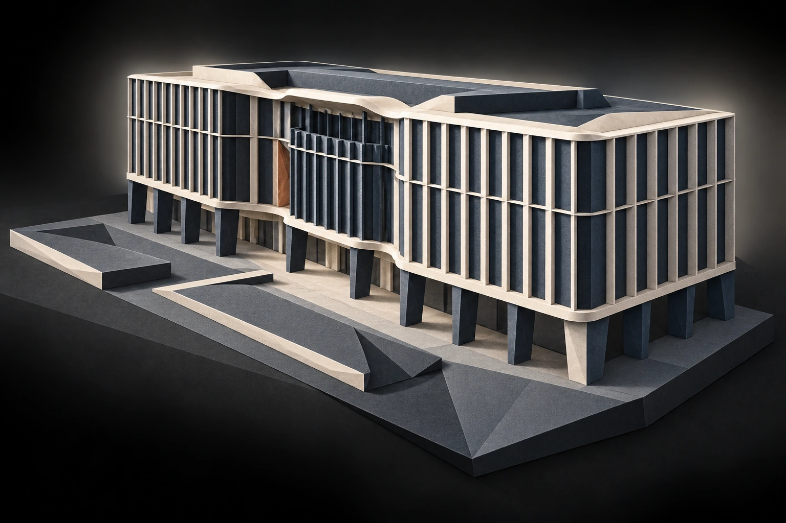
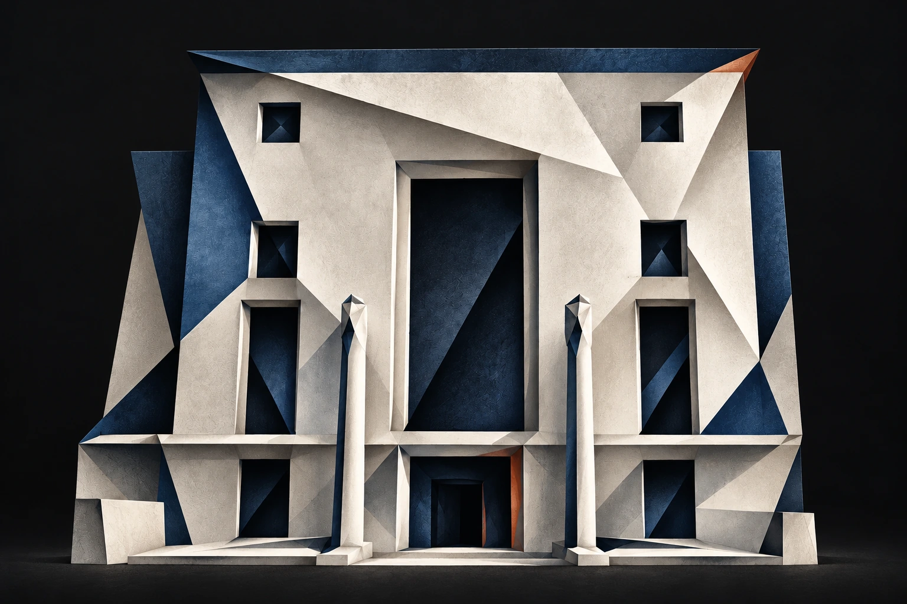
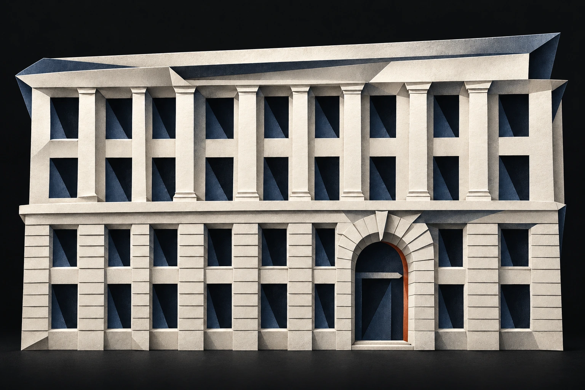
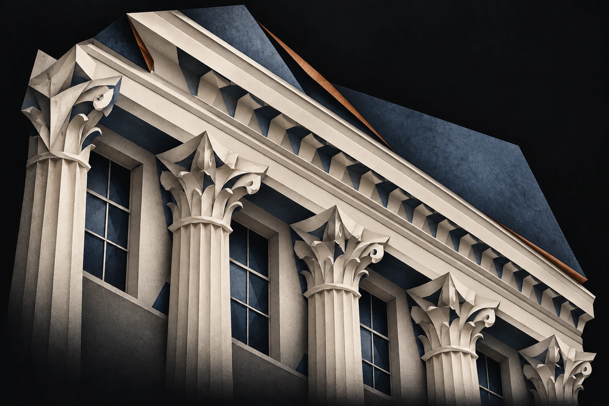
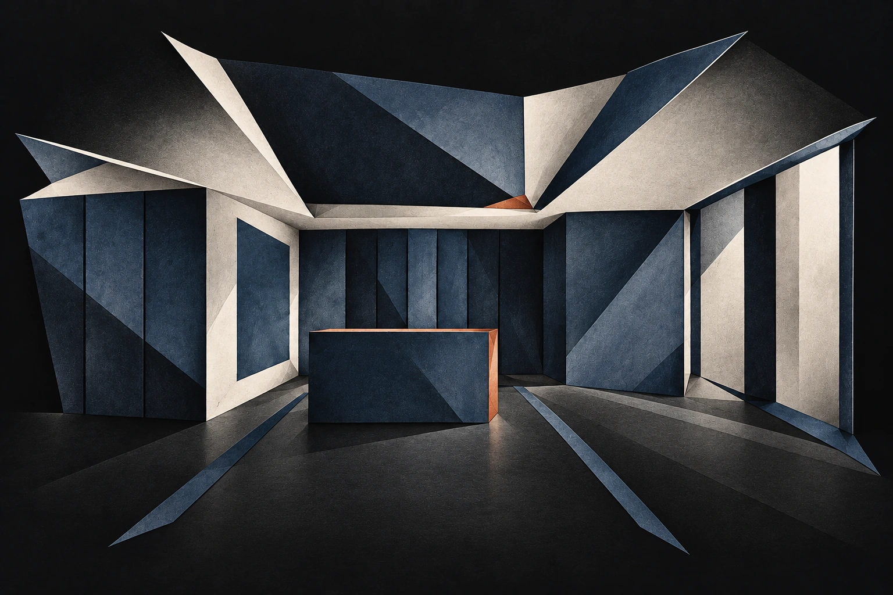
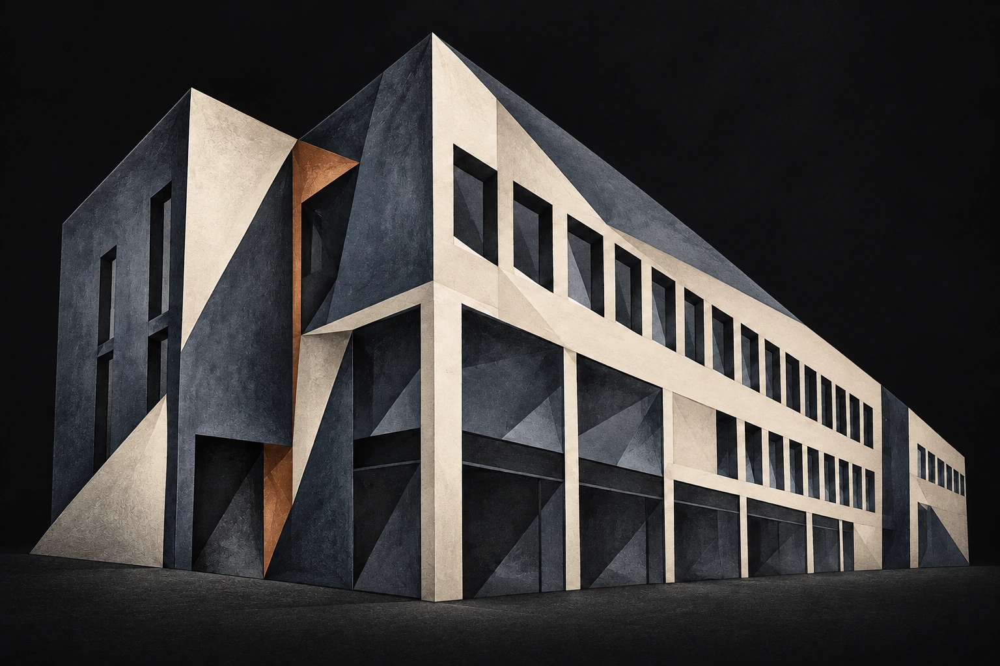

GAURAV KATARIA / Chartered Engineer · Chartered Scientist
Architecture. Engineering. Real estate.Building better.
Thinking bigger.
Engineering insight. Real estate value.
Explore my work ↓BUILDING PERFORMANCEMaking the invisible visible.Energy · Systems · Design
Building performanceEnergy & carbonReal estate strategyData & simulation
01 / SELECTED WORK
Performance.
With purpose.
From landmark refurbishments to new-build campuses. Simulation that informs design, investment and long-term value.

Higher education£300mUniversity development
The Keystone Building
01Project overview+
Situation
A £300m university development with ambitious energy targets and complex building services.
Task
Inform value engineering while coordinating HVAC systems with the building’s operational requirements.
Action
Led detailed HVAC modelling and developed a five-tier strategy combining natural and mechanical ventilation.
Result
Simulation-backed decisions supported substantial capital-cost savings while keeping building performance central to the design.

Architecture & culture60%Projected energy reduction
House of Architecture
02Project overview+
Situation
A £20m landmark refurbishment seeking a major reduction in operational energy and carbon.
Task
Develop an evidence-led services strategy to support the client’s long-term investment plan.
Action
Built a detailed thermal and HVAC model covering 31 air-handling and heat-recovery ventilation units.
Result
The analysis supported a projected 60% operational-energy reduction and informed the asset’s decarbonisation strategy.

Commercial workplace4 starsUK NABERS · DfP
5 St Philips Place
03Project overview+
Situation
A prime commercial workplace being repositioned to attract premium tenants in a competitive market.
Task
Balance energy efficiency and occupant wellbeing while supporting NABERS and WELL certification objectives.
Action
Led integrated modelling to assess energy and health requirements together and inform the performance strategy.
Result
The project achieved UK NABERS 4 Stars (Design for Performance) and WELL Gold, strengthening its market appeal.

Heritage & cultureGrade IHeritage decarbonisation
The Royal Institution
04Project overview+
Situation
A Grade I listed cultural institution requiring sensitive decarbonisation and major HVAC plant refurbishment.
Task
Provide a clear business case for plant replacement, balancing heritage constraints with building performance.
Action
Developed a calibrated energy model and simulated alternative plant-replacement options on a consistent basis.
Result
The analysis enabled a confident capital-allocation decision and an evidence-led pathway for the heritage asset.

Commercial workplace>35%Projected Part L improvement
Holywell Yard
05Project overview+
Situation
A new Shoreditch office targeting strong environmental credentials beyond minimum regulatory compliance.
Task
Significantly improve on Part L2 2021 energy and carbon requirements while identifying design risks early.
Action
Guided early-stage performance modelling to inform efficient system integration and highlight opportunities for improvement.
Result
The final design was projected to outperform the Part L2 2021 benchmark by more than 35%.

Further educationNet zeroOperational carbon target
Northumberland College
06Project overview+
Situation
A DfE-funded college aiming to become a sustainability exemplar for the UK education sector.
Task
Test the design against a target of net zero carbon in operation from its first year.
Action
Led the overall modelling strategy and detailed simulations, keeping the operational-carbon target central to assessment.
Result
The simulation-tested design was expected to meet the net zero carbon in operation target.
02 / PERSPECTIVE
The detail.
And the bigger picture.
CAPABILITY FOCUS
Personal self-assessment
HVAC Modelling
HVAC simulation
Energy Strategy
Carbon pathways
Commercial Acumen
Investment value
Data Science
Predictive models
Life Cycle Analysis
Whole-life carbon
Comfort & Health
Comfort & light
Follow the journey ↗03 / EXPERIENCE & EDUCATION
A broader
point of view.
Architecture laid the foundation. Engineering brought the rigour. Management brings a wider lens.
In practice 2021 — 2026
Apr 2024 – May 2026
Senior Engineer (Building Performance)
Harley Haddow, London ↗- Leading decarbonisation strategies to inform long-term investment and asset management.
- Performing detailed HVAC modelling to validate capital expenditure and operational costs.
Aug 2023 – Apr 2024
Building Performance Engineer
Harley Haddow, London ↗- Specialised in creating digital twins to guide strategic decisions for complex projects.
- Undertook CIBSE TM54 assessments and R&D for UK NABERS, to verify asset performance against financial targets.
Sept 2021 – Aug 2023
Graduate Sustainability & Building Physics Engineer
Cundall, Birmingham ↗- Delivered performance modelling for diverse commercial assets.
- Led sustainability consulting for WELL and BREEAM, directly enhancing asset value and marketability.
- Conducted comfort studies to de-risk designs and inform investment decisions.
May 2021 – Sept 2021
Graduate Energy & Carbon Consultant
Verte, London ↗- Developed energy models for Part L compliance.
- Explored modelling strategies to meet LETI energy-performance benchmarks.
- Formulated sustainability due-diligence studies for commercial real estate assets.
In learning 2015 — 2027
Aug 2026 – Aug 2027
Master of Business Administration (PGPX)
IIM Ahmedabad, Dubai ↗- Focused on strategy, leadership, and general management.
- Strengthened commercial decision-making across real estate and infrastructure.
Oct – Nov 2025
Sustainable Real Estate Programme
University of Cambridge, CISL ↗- Pursued the executive programme to delve further into the wider real-estate realm.
- Focused on the business and financial case for sustainability in the built environment.
2020 – 2021
MSc. Built Environment: Environmental Design and Engineering
University College London (UCL) ↗- Graduated with Merit honours.
- Industry-led dissertation awardee, in collaboration with the architecture firm Haworth Tompkins.
- Balanced academic commitments with a consultancy role and extensive professional development.
2015 – 2020
Bachelor of Architecture
GD Goenka University ↗- Graduated top of class with Distinction and Gold Medal honours.
- Awarded a merit scholarship for three consecutive years, in recognition of academic excellence.
- Gained foundational industry experience through internships in architectural design, BIM, and MEP coordination.
04 / PROFESSIONAL FOUNDATIONS
Built on rigour.
Professional registrations, memberships and continued learning.